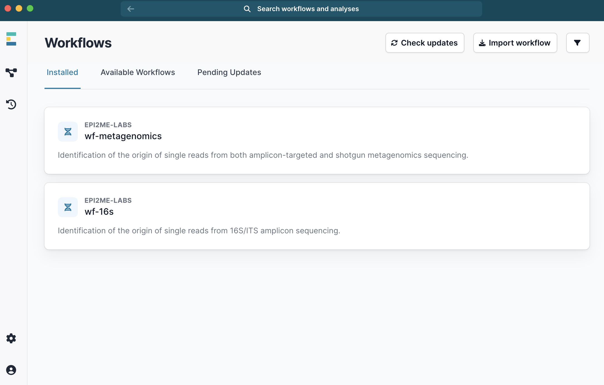
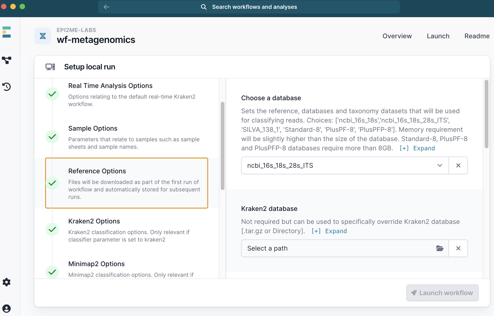
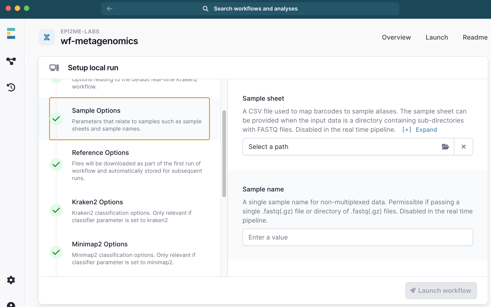
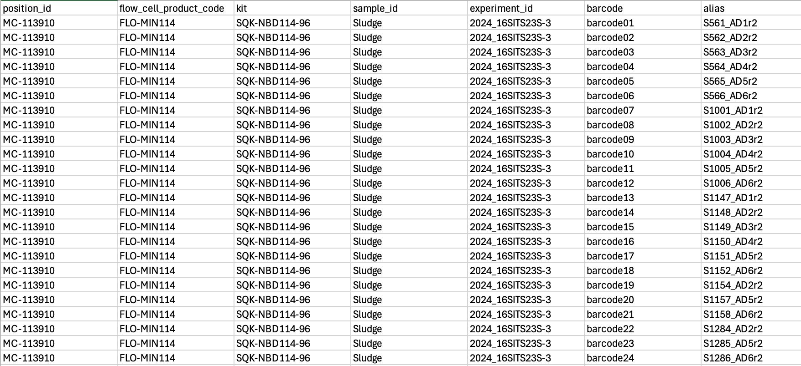
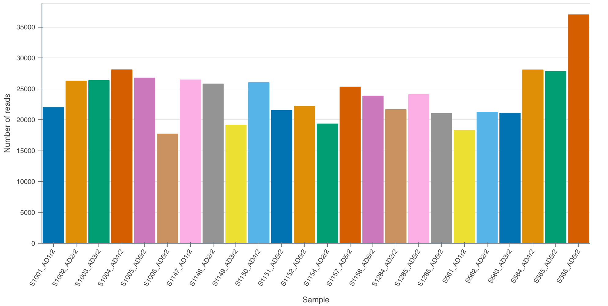
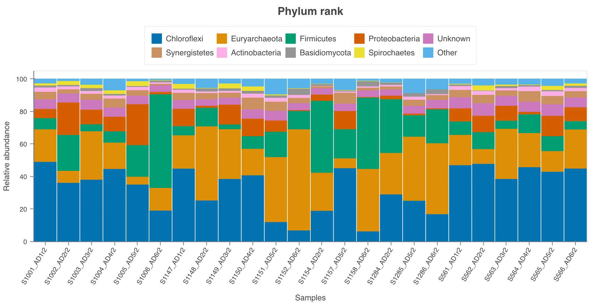
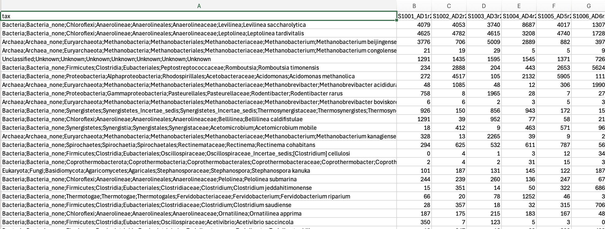

Chapter 3 Protocol
3.1 DNA extraction
3.1.1 Checklist
- Extraction kit - DNeasy Powersoil Pro, Qiagen, Hilden, Germany. See Section 2 for more details.
- Alternatively the high throughput version of the kit used with the QIAcube DNeasy 96 PowerSoil Pro QIAcube HT Kit.
- Vortex with 24 x 1.5 mL tube adapter (e.g. Vortex Genie 2 + adapter). Alternatively, a PowerLyzer Homogenizer.
- NanoDrop spectrophotometer to assess DNA quality.
- Qubit fluorometer to accurately measure DNA concentrations.
3.1.2 Steps
- Follow the extraction kit’s protocol with 15 mins bead beating using a Vortex-Genie and 24-tube adapter. Reduce this to 10 mins if less than 24 samples are extracted or if shearing of DNA should be minimised.
- Measure DNA quality using DNA extract (1 µL) using a Nanodrop spectrophotometer
- Measure DNA concentration using a Qubit fluorometer.
- Into a 96-well plate, normalise extracted DNA to required PCR concentrations. For example, if 10 ng template is required for PCR, normalise DNA to 5 ng/µL.
- Store DNA at 4˚C until library preparation - no more than 1 week.
- Store DNA at -20˚C if sequencing is more than 1 week away.
3.2 Amplification of 16S-ITS-23 operon
3.2.1 Checklist
- 10 mM dNTPs (N0447S, New England Biolab)
- Q5 Hot Start High-Fidelity DNA Polymerase (M0493, New England Biolab)
- 10 µM Forward Primer A519F (CAGCMGCCGCGGTAA) (Martijn et al. 2019)
- 10 µM Reverse Primer U2428R (CCRAMCTGTCTCACGACG) (Martijn et al. 2019)
- JetSeq Clean Magnetic beads - or equivalent (MER-BIO-68031, Millenium Science) - to clean up PCR products
- twin.tec® PCR plate 96 LoBind, semi skirted (0030129504, Eppendorf)
- Nuclease-free water
- 10 mM Tris-HCl pH 8.0 with 50 mM NaCl (UltraPure™ 1M Tris-HCI, pH 8.0 #15568025 & NaCl (5 M), RNase-free #AM9760G, Thermo Fisher)
- HyperLadder 1kb (BIO-33025, Bioline, Millenium Science)
- 80% ethanol, freshly prepared in nuclease-free water
- Qubit 1X dsDNA BR Assay Kit (Q33266, Thermo Fisher)
Notes
- Do not vortex tubes during library preparation to prevent DNA fragmentation. Fragmentation of amplicons may lead to incomplete reads.
- The primer amplifies the whole rrn operon.
Benefits of targeting the whole rrn operon:
- Superior species-level resolution and accuracy (Cuscó et al. 2019; Srinivas et al. 2024).
- Covers Bacteria and Archaea.
Risks of targeting the whole rrn operon:
- Not as representative of true abundances as full-length 16S amplicons.
- Species with unlinked 16S and 23S rrn DNA will be missed with this approach (for example < 9% of rRNA genes in wastewater sludge (Brewer et al. 2020)).
3.2.2 PCR
Time required: ~4 hrs incl. 2hrs, 40mins PCR.
- Prepare a PCR mastermix for the required number of 50-µl reactions (Table 3.1). It may be necessary to combine two 50 µl reactions for each sample to produce sufficient amplicon mass for a final concentration of 200 fmol as input for the Native Barcoding Kit from Oxford Nanopore.
- Add 3 µl of eDNA (5ng /µl) into a 96-well plate (e.g. Eppendorf twin.tec® PCR plate 96 LoBind, semi-skirted) using a multichannel pipette.
- Add 47 µl of mastermix using a multichannel pipette and carefully pipette up and down 10 x
- Run thermocycler (Table 3.2).
- Verify amplification length via 1% agarose gel electrophoresis @ 100V for 30 min including a 1 kb ladder.
- Store at 4˚C overnight if needed.
Important:
Use hot start polymerase for ease of use, with high fidelity/accuracy and one that is suitable for long amplicons. For example, Q5 High- Fidelity DNA Polymerase kit (New England Biolabs) with GC enhancer (Martijn et al. 2019).
≤ 200 fmol is required per sample for the Native Barcoding Kit from ONP. Based on 4.25 kb (4-4.5kb), the final DNA concentration after cleaning up PCR products should be no less than 48 ng/µL (at 11.5 µl input volume) - giving 552 ng of 4.25kb amplicons.
It may require two PCR reactions to achieve the required DNA amount (200 fmol); e.g. pool 2 x 50µl PCR products, clean combined and elude in 32.5 µl Tris. Check if 25 cycles (instead of 30) are enough to get sufficient yield. A lower cycle number lowers the risk of errors.
| Component | 50 µl reaction | Final concentration |
|---|---|---|
| 5X Q5 Reaction Buffer - M0493S NEB | 10 µL | 1X |
| 10 mM dNTPs N0447S | 1 µL | 200 µM |
| 10 µM Forward Primer | 2.5 µL | 0.5 µM |
| 10 µM Reverse Primer | 2.5 µl | 0.5 µM |
| Template DNA - 15 ng | 3 µL (5 ng/µL) | < 1,000 ng |
| Q5 Hot Start High-Fidelity DNA Polymerase -M0493S NEB | 1.0 µL | 0.04 U/µL |
| 5X Q5 High GC Enhancer M0493S NEB | 10 µL | (1X) |
| Nuclease-Free Water | to 50 µL |
| Cycle conditions |
|---|
| 1 cycle: |
| 30 s - Initial Denaturation 98 degree C |
| 30 cycles: |
| 10 s - 98 degree C |
| 30 s - 64 degree C |
| 210 s - 72 degree C |
| 1 cycle: |
| 10 min - Final Extension 72 degree C |
3.3 PCR product clean-up
Clean with 0.6X JetSeq Clean Magnetic beads (or equivalent) and wash twice with 80% ethanol. This follows a similar protocol to the Illumina 16S-metagenomics library prep guide in case you are familiar with that.
Time required: ~ 1 hr per 24 samples.
3.3.1 Checklist
- Magnetic rack for 96-well plate (e.g. #AM10027 Thermo Fisher)
- 80% ethanol, freshly prepared in nuclease-free water
- Nuclease-free water
- 10 mM Tris-HCl pH 8.0 with 50 mM NaCl (UltraPure™ 1M Tris-HCI, pH 8.0 #15568025 & NaCl (5 M), RNase-free #AM9760G, Thermo Fisher)
- JetSeq Clean Magnetic beads (MER-BIO-68031, Millenium Science) or equivalent - to clean up PCR products
- Qubit 1X dsDNA BR or HR Assay Kit (Q33266 or Q33231, Thermo Fisher)
- HyperLadder 1kb (BIO-33025, Bioline, Millenium Science)
- A worksheet to enter concentrations and calculate volumes for normalising DNA to 200 fmol
Note
Use wide bore tips for adding mag beads and subsequent (careful) mixing by pipetting to minimise DNA fragmentation.
3.3.2 Steps
- Pool replicate reactions into one well - e.g. 2 x 50 µl = 100 µl in one well.
- Using a multi-channel pipette, add 0.6X beads to PCR products in the same wells (e.g. 60 µl to 100 µl pooled reactions), pipette 10 x up and down and/or a gentle vortex after sealing the plate, careful not to spill (Vortex Genie speed 2).
- 10 min incubation at RT
- Place plate on a magnetic rack for 5 mins and remove supernatant.
- Wash twice with 200 µl 80% ethanol in same 96-well plate, discard ethanol and let evaporate for ~ 5 mins or until completely removed.
- Take plate off magnet and elude pellet to a volume that provides appropriate DNA concentrations
- e.g. add 32.5 µl of elution buffer (10 mM Tris 50mM NaCl). The pellet will be stuck higher than the buffer surface in the well.
- Hence, pipetting up and down 20–30 x may be necessary to carefully wash the pellet of the tube wall, using a wide bore tip.
- And/or centrifuge plate at 200 rcf for 1 min.
- Off-magnet, incubate plate for 15 minutes at 37°C (e.g. in a water bath with only the wells submerged in water). Every 2 minutes, agitate the sample by gently vortexing the plate for 10 seconds (after sealing plate) to encourage DNA elution - and spin plate down.
- Collect 32 µl of cleaned DNA after ~ 5 mins on magnet using wide bore tips.
- Quantify and record amplicon concentrations using Qubit HS or BS chemistry and record values. Based on 4 kb amplicons, the final DNA concentration after cleaning up PCR products should be no less than 45 ng/µL to have sufficient material for downstream library preparation (200 fmol, > 520 ng of 4 kb amplicons).
- Verify amplification length via 0.5-1% agarose gel electrophoresis @ 100V for 30 min including a 1 kb ladder.
- For each sample calculate volumes required of cleaned DNA and H20 to get 200 fmol in 11.5 µl - for library preparation with the Native Barcoding Kit from Oxford Nanopore. Use V1 = C2*V2 / C1, where V1 = x, C1 = DNA concentrations (ng/µl), C2 = 45.22 ng/µl, V2 = 11.5 µl). H20 volume = 11.5 µl - V1. These volumes will be used in the next step.


3.4 Library preparation
DNA Library preparation, including barcoding and pooling of samples (multiplexing). Here the DNA input are >4 kb amplicons of the 16S-ITS-23S rRNA operon from environmental DNA. The Long Fragment Buffer (LFB) is used (not the Short Fragment Buffer)
Time required: ~ 6 hours from start to finished library ready for loading.
Notes
- Follow the protocol
Ligation sequencing amplicons - Native Barcoding Kit 96 V14 (SQK-NBD114.96)-minion.pdfavailable on nanoporetech.com. For details about the barcodes check here: https://community.nanoporetech.com/technical_documents/chemistry-technical-document/v/chtd_500_v1_revaq_07jul2016/barcode-sequences. For final library calculations we assume that around 300 bps are added to the amplicons through barcodes, flanking sequences and adapters. If you know more - let us know on the Github discussion section. - Update the MinION packages and MinKNOW software.
- Prepare a sample sheet for upload to instrument if desired (not essential but saves a little time when setting up the sequencing in MinKNOW - AND you can use it for demultiplexing with dorado later). More info on how to upload sample sheets here.
- Amplicon product yields from PCR can vary widely depending on environmental source.
- To achieve consistent, normalised concentrations (200 fmol) across all samples, add appropriate input volume (calculated with C1*V1 = C2*V2) and fill to 11.5 µl with H20 to the first step of the Native Barcoding kit protocol.
- If you plan to sequence after library preparations, insert a flow cell now and do a flow cell check and record the number of pores. This will take around 10 minutes. Afterwards store it at 4˚C until ready to load. We got 1,500-1,750 pores with new flowcells (R10.4.1) that were stored for two weeks at 4 degrees.
3.4.1 Checklist
- Native Barcoding Kit (Oxford Nanopore, SQK-NBD114.96)
- End-prep
- DNA Control Sample (DCS)
- Elution Buffer (EB)
- Native barcode ligation
- AMPure XP Beads (AXP)
- EDTA
- Native Barcodes (NB01-96)
- Sequencing adapter ligation
- Native Adapter (NA)
- Elution Buffer (EB)
- AMPure XP Beads (AXP)
- Long Fragment Buffer (LFB)
- End-prep
- NEBNext Quick Ligation Module (E6056, New England Biolab)
- NEBNext Ultra II End repair/dA-tailing Module (E7546S, New England Biolab)
- Blunt/TA Ligase Master Mix (M0367, New England Biolab)
- 80% ethanol, freshly prepared in nuclease-free water
- Nuclease-free water
- Qubit 1X dsDNA BR or HR Assay Kit (Q33266 or Q33231, Thermo Fisher)
- Eppendorf LoBind tubes (Eppendorf)
- Magnet for 1.5 ml tubes
- Hula mixer (#15920D, Thermo Fisher) or similar overhead mixers
3.4.2 Steps
Follow the Nanopore protocol. There are four parts:
End-prepping of 11.5 µL DNA (200 fmol).
Pipetting into the 96-well plate may take time as there are two rounds of pipetting, one for the DNA amplicon volumes and one for H20 volumes to get 200 fmol amplicon DNA in 11.5 µl, as well as the remaining reagents for end-prepping the DNA. It is not possible to use multichannel pipettes for this step.Native barcode ligation using 0.75 µL of end-prepped DNA using one of 96 barcodes from the kit for each sample, plus pooling of all barcoded samples into a LoBind tube (1.5 mL).
Bead clean-up of pooled end-prepped DNA library and elution of 35 µL volume; quantification with Qubit 1X dsDNA HS Assay Kit. We used all of the available end-prepped volume (e.g. 33 µl after Qubit quantification) for the next step, i.o. only 30 µl as per protocol.
SAFE STOP: Store at 4 ˚C overnight if needed.
Adapter ligation. Once this step is completed, you get a final volume of 15 µl of clean end-prepped/barcoded/adapter ligated DNA.
We have stored the library at 4˚C overnight and sucessfully sequenced it the next day (although it is preferred to sequence right after adapter ligation).
The concentration we achieved was ~20-25 ng/µl, which means there was sufficient DNA for two runs. After quantify DNA concentrations with 1 µl DNA there are 14 µl left.
Nanopore’s recommended loading concentrations are 35–50 fmol at 12 µL volume. For example, at a concentration of 25.3 ng/µl (4,300 kb amplicon) a total of 5.50 µl of DNA library (plus 6.50 µl H20) are sufficient. The remaining 6.50 µl DNA library can be stored in fridge overnight if required.


3.5 Priming and loading of flow cell - run start
Time required: ~10-15 mins for priming and loading. 24 hours for sequencing.
3.5.1 Checklist
- The same protocol:
Ligation sequencing amplicons - Native Barcoding Kit 96 V14 (SQK-NBD114.96)-minion.pdfavailable on nanoporetech.com - Bovine Serum Albumin (BSA) (50 mg/ml) (AM2616, InvitrogenTM UltraPure)
- Native Barcoding Kit (Oxford Nanopore, SQK-NBD114.96)
- Flow Cell Flush (FCF)
- Flow Cell Tether (FCT)
- Sequencing Buffer (SB)
- Library Beads (LIB)
- R10.4.1 flowcell (Oxford Nanopore, FLO-MIN114)
3.5.2 Steps
Follow the Nanopore protocol. There are five steps:
- Preparation and loading of sequencing buffer and wait for 5 minutes.
- Preparation of library. Nanopore’s protocol recommends loading 35–50 fmol at 12 µL volume.
- Loading of remaining sequencing buffer
- Loading of library
- Setting up the run for 24 hours and press start! More details will follow about recommended hours and expected yield based on 24 samples.
3.6 Flow cell wash
Time required: ~ 1.5 hours.
Wash the flow cell once the run has finished. Note that after the wash you can either load a new library directly afterwards or add storage buffer to load a new library later (always store flow at 4 ˚C).
However, it is only possible to check the number of pores (and estimate potential yield) after adding storage buffer. The washing buffer is not suitable for a running a flow cell check. So loading a new library directly is only sensible if the user knows how many active pores to expect. Although, the instrument will do a pore scan at the start, it will be too late once you loaded the new library.
As a gauge, we ran a flowcell with 1,500 pores for 24 hours (loaded with 24 barcoded samples of 16S-ITS-23S amplicons). At the end 558 active pores remained before the wash.
Note that washing the flowcell does not interfer with any active basecalling processes on the Mk1C, which may take days to finish if High Accuracy was chosen.
3.7 Basecalling
Time required: ~ several days depending on computational resources.
If you have a PromethION integrated (P2i) you can run Super High Accuracy (SUP) basecalling on the device in almost real time (it has an Nvidia GPU). In that case there is no need to copy POD5 files from the instrument to another computer for SUP basecalling on a separate GPU device.
The below assumes that the SQK-NBD114-96 kit was used for preparing the amplicon library.
3.7.1 Checklist
- dorado installed on an instance or device with either Apple silicon (M1/M2) or Nvidia GPUs (the latest Nvidia RTX 4090 performs best it seems).
- POD5 files from Nanopore sequencer (either copy on USB or connect do instrument folders through
ssh) - samplesheet.csv (More details about the sample sheet in the library prep section).
3.7.2 Steps
- First let the Nanopore sequencer finish basecalling with the Fast model (unless you have a Promethion Pi, which will provide you with SUP-basecalled bam/fastq files, i.e. the following steps are not required in this case).
- Copy POD5 files from sequencer to a GPU-powered computer or instance, into a folder called
pod5/. In our case that was 85GB of data (But expect a bit more; our MinION had a power outage just before all pod5 finished generating… :( ). - Run
dorado basecaller sup pod5/ > calls.bam. - Demultiplex the resulting
.bamfile usingdorado demux --kit-name SQK-NBD114-96 --sample-sheet samplesheet.csv --output-dir 16SITS23S_samples/ --emit-fastq call.
At the end you should have one .fastq file for each sample, ready for further quality trimming and read classification.
3.8 Read classification
The following method (using the wf-metagenome workflow from EPI2ME, with kmer-based read predictions) will provide classified reads of Bacteria and Archaea but, depending on the read quality, will result in some false positives. And abundances will not be a true representation of abundances as no clustering, dereplication or ASV generation is involved. Results will not be comparable to other studies.
However, it will provide read classification to species-level to some degree of certainty, which may be useful in cases when you are not interested in the true representation of relative abundances. For example, if you are after temporal variation or differences between your samples in your experiment.
As rrna operon sequencing is relatively new, the classification methods and databases are still evolving. If you want to explore other methods, I recommend starting with the following papers: (Curry et al. 2022), (Rodríguez-Pérez, Ciuffreda, and Flores 2021) and (Walsh et al. 2024).
3.8.2 Steps
- Trim fastq files. In this case we used the tool
Chopperto remove any reads below Q20 and filter by length.
#!/bin/bash
for file in *.fastq; do
# Construct the output filename based on input filename
output_file="${file%.fastq}_filtered.fastq"
# Run the chopper command on the current file
chopper -q 20 --minlength 3000 --maxlength 5000 -i "$file" > "./Test/$output_file"
echo "Filtered reads from $file saved to $output_file"
done- Within EPI2ME, download, install and select the
wf-metagenome workflow.
 - Click
Run this workflow, thenRun on your computer. - Select the path to your fastq files.
- Select classification method. Either kraken2 or minimap2
- Under Reference Options select a database. We used
ncbi_16s_18s_28s_ITS.
 - Under Sample Options select you sample_sheet.csv.

 - Then launch the workflow.
- Once completed your will receive a
report.htmlwith some results, plus a.tsvtable with abundances to species-level for further analysis in your favorite platform.
3.9 Results
In our case we got ~ 25,000 reads per sample containing 2,137 species. Upon first inspection it is clear that read depth is too low and that longer sequencing times are required than 24 hours for 24 samples. We aim for around 100,000 reads per sample. On a MinION flowcell I would aim to sequence for the full 72 hours next time.


